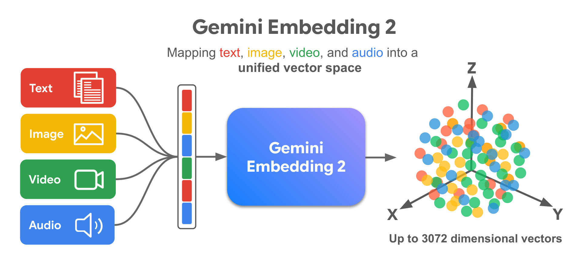
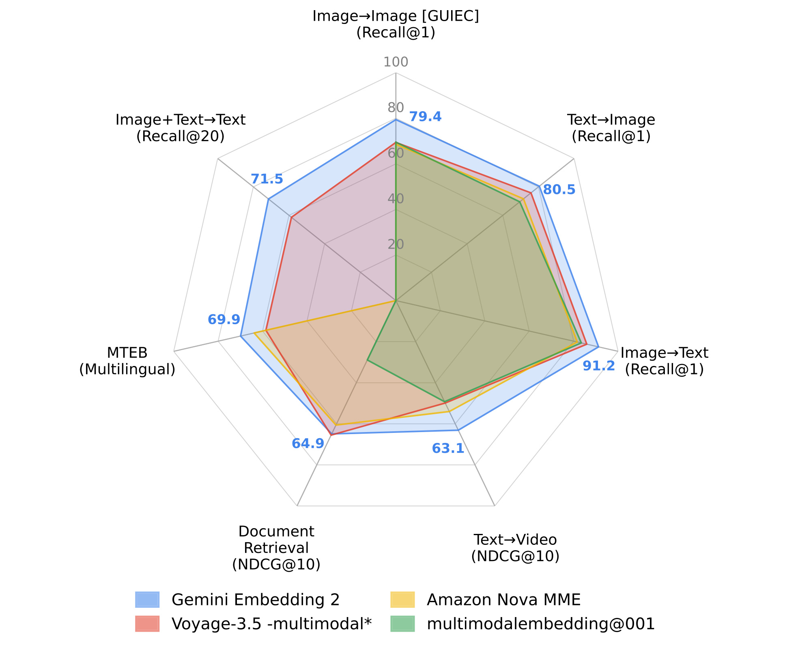
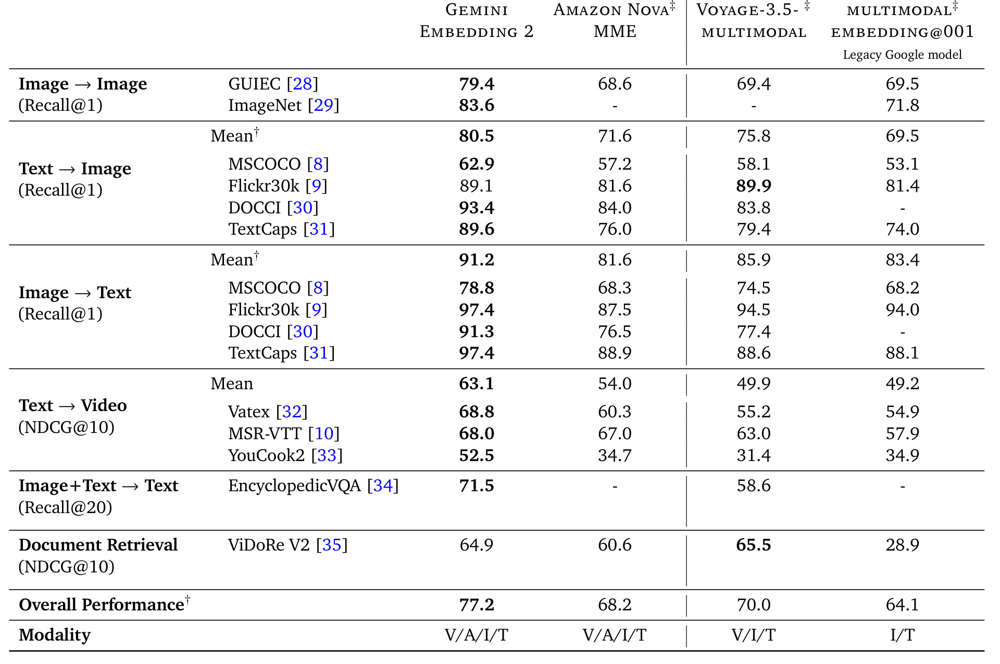
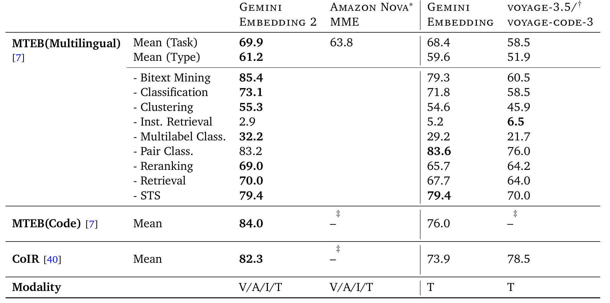
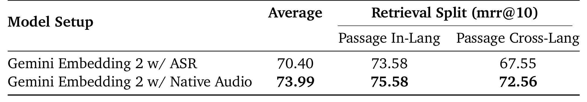
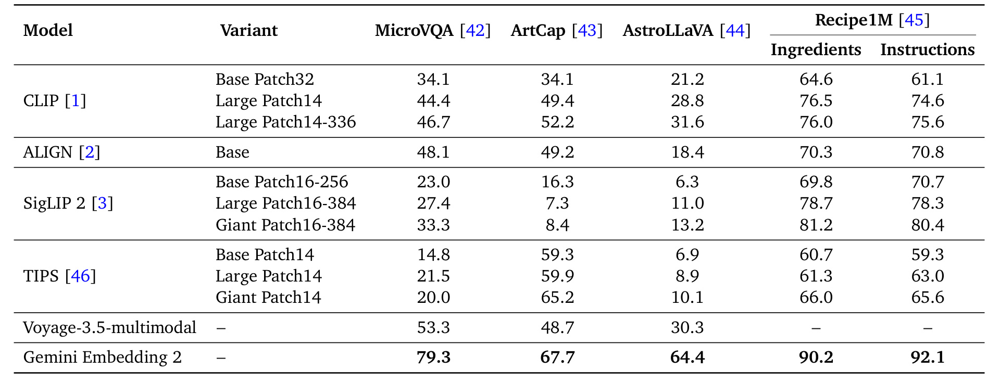
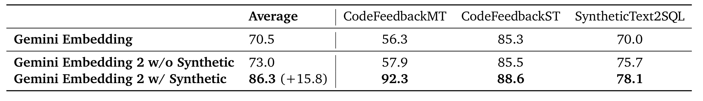
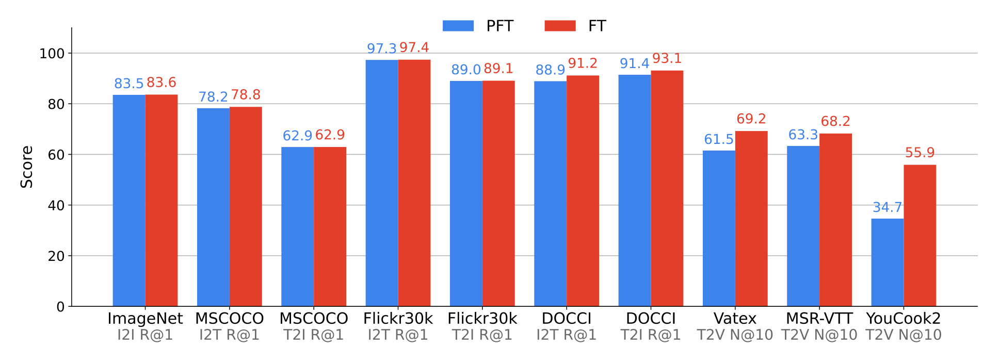
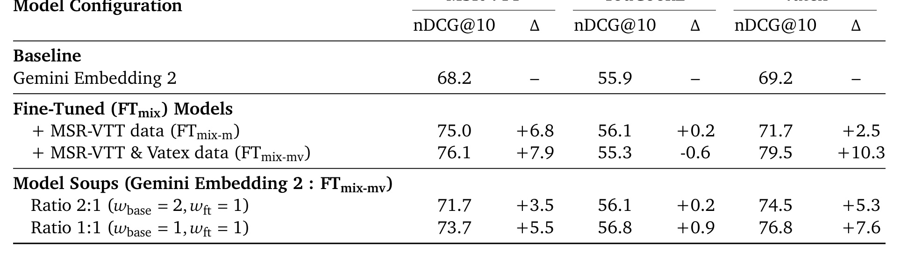

Google / Google DeepMind 的《Gemini Embedding 2: A Native Multimodal Embedding Model from Gemini》讨论一个在 RAG、搜索、推荐和多媒体检索里越来越核心的问题：能否用同一个 embedding 模型原生处理文本、图像、视频、音频以及这些模态交错组合，而不是为每个模态维护一套专用 encoder 或把非文本输入先转成 caption/ASR 文本。论文没有公开独立代码仓库，本笔记以 arXiv 论文、PDF 图表和实验口径为准；阅读重点放在模型如何从 Gemini 初始化、如何把多模态输入压成统一向量、训练目标如何兼容多任务，以及实验结果到底证明了“统一”到什么程度。
1. 背景和问题
Embedding 模型在现代信息系统里承担的是“把复杂对象放到可比较空间”的角色。文本检索里它用于 query-document matching，推荐系统里它用于 item/user 表征，RAG 里它决定知识块是否被召回，多媒体搜索里它连接图片、视频、音频和自然语言。过去几年文本 embedding 发展很快，BGE、E5、NV-Embed、Gemini Embedding 等模型把 instruction tuning、contrastive learning、synthetic data 和 LLM backbone 引入表征学习；多模态 embedding 也有 CLIP、ALIGN、SigLIP、CoCa 等经典双塔路线。但是这些路线各自有一个结构性限制：文本 embedding 强在语言理解，多模态双塔强在成对图文对齐，却很难自然处理“图像+文本作为 query 检索视频片段”“带截图的文档检索”“音频问题直接检索文本答案”“长文档中图表和文本混合语义”等交错输入。
传统多模态 embedding 多采用 late fusion 或 modality-specific encoder。图像走视觉塔，文本走文本塔，视频通常抽帧后再聚合，音频往往先经过 ASR 或单独音频 encoder。这样的做法工程上清晰，但语义交互被限制在较晚阶段：模型可以学会图片和 caption 在同一空间附近，却不一定理解一段视频里的视觉事件、字幕文本、声音线索和用户自然语言 query 之间的联合关系。对推荐和搜索而言，这个限制很实际。视频推荐不只是“视频封面匹配文本兴趣”，还包括画面、声音、标题、评论和用户上下文共同决定相关性；商品搜索不只是商品图与 query 文本匹配，还涉及图片里的文字、页面布局、规格表和用户意图；企业 RAG 不只是纯文本 chunk 召回，还要检索 PDF、表格、图表和截图。
Gemini Embedding 2 的问题定义可以概括为：用 Gemini 本身的原生多模态理解能力，训练一个统一 embedding 模型，使文本、图像、视频、音频和任意交错组合都映射到同一个向量空间。这里“原生”是关键词。论文不是把音频先转成 transcript，也不是把图片先 caption 成文字，再交给文本 embedding；它强调输入可以保持 Gemini 支持的原始模态格式，由 Gemini 的多模态 tokenization 和 backbone 处理，再经过 embedding fine-tuning 得到向量。这样做的潜在收益是两个层面的。第一，模态内部信息不会被中间文本表示过早丢弃，例如音频中的语调、重音、歧义发音，图像中的布局、文字和细粒度视觉属性。第二，混合模态输入可以在 transformer 内部发生深层交互，而不是在两个 encoder 输出后才做相似度拼接。
这篇论文也把统一 embedding 放在更大的产品语境里：RAG、recommendation、search 和 agentic applications。Embedding 模型越通用，下游系统越可能减少专用检索器和格式转换链路。例如视频推荐可以把视频帧、音轨和文本元数据都映射到同一空间；企业搜索可以把 PDF 页面作为视觉文档直接嵌入；多模态 RAG 可以让用户用图片加文字查知识库；agent 也可以把屏幕截图、语音、文档和代码片段放进统一记忆索引。统一模型不必然意味着所有任务都最佳，但如果质量足够高，它会改变系统边界：更多问题可以被建模成“统一空间里的检索与排序”，而不是多个检索系统之间的 hard routing。
论文要证明的主张也比较重：Gemini Embedding 2 不只是“支持多模态”，还要在 key embedding benchmarks 上达到或超过专用模型。摘要给出的代表性数字包括 MSCOCO text-to-image 的 $62.9$ R@1、Vatex text-to-video 的 $68.8$ NDCG@10、MTEB multilingual 的 $69.9$ 以及 MTEB Code 的 $84.0$。这些数字本身需要放在各 benchmark 的可比口径里看，但它们说明作者试图同时维持四类能力：多模态检索、文本多语言检索、代码检索和 specialized domain zero-shot。对工程读者来说，真正要问的问题是：统一模型的代价在哪里？它是否牺牲文本 embedding？是否只是图文检索强而音频、文档、视频弱？是否依赖大量任务特定 prompt？后文方法和实验就是围绕这些问题展开。
2. 方法
2.1 从 Gemini 到 embedding model：统一空间的总体流程
Gemini Embedding 2 的核心设计是把 Gemini 的多模态生成能力改造成一个 dense representation model。论文把它称为 native multimodal embedding model，是因为模型直接接收 Gemini 支持的文本、图像、视频、音频和文档输入，而不是先把不同模态离线转换成同一种文本中间表示。输入侧可以是单一模态，也可以是 interleaved multimodal inputs，例如文本问题加图片、视频帧加说明、音频 query 加上下文文本。输出侧则是一个最多 $3072$ 维的向量，后续通过 cosine similarity 做检索、聚类、分类或重排。

Figure 1 展示了论文想强调的系统边界：左侧是 text、image、video、audio 四类输入，中间不是四个独立 encoder，而是 Gemini Embedding 2 统一模型，右侧是同一个高维向量空间。这个图虽然是概念图，但它背后有一个重要工程承诺：如果输入是“图片+文本”“视频+音频”“文档页面+问题”，模型不需要先把某些模态转成另一种格式才能入库。对推荐系统而言，这意味着 item embedding 可以更自然地吸收多模态内容；对 RAG 而言，知识块不一定局限于 OCR 后的文本；对搜索而言，query 和 target 的模态可以不对称，例如 text-to-video、audio-to-text、image+text-to-answer retrieval。
2.2 输入 tokenization、双向注意力与 pooling
论文给出的模型结构可以写成一条清晰的 embedding pipeline。首先，不同模态被 Gemini 原生前处理和 tokenization 成 token sequence。设输入序列为 $T$，长度为 $L$。这个序列进入一个由 Gemini 初始化、具有 bidirectional attention 的 transformer $M$，得到逐 token 表示：
符号解释：$T$ 是经过 Gemini 原生模态处理后的输入 token 序列，$L$ 是 token 长度，$M$ 是由 Gemini 初始化并改成双向注意力的 transformer，$T_{\mathrm{embed}}$ 是逐 token 表示，$d_M$ 是 transformer hidden dimension。与自回归生成模型的单向 attention 不同，embedding 任务需要每个 token 的表示能看见完整上下文，否则 dense vector 很难表达输入整体语义。论文没有把 Gemini 原始 causal decoding 细节展开，但明确说 embedding transformer 使用 bidirectional attention，并把从 Gemini 初始化理解为 embedding model 的 pre-training stage：Gemini 参数里已有大规模多模态、多语言和代码知识，embedding fine-tuning 在此基础上学习“如何把这些知识压成可比较向量”。
第二步是 pooling。给定 token-level 表示 $T_{\mathrm{embed}}$，模型使用 pooler $P$ 得到单个向量：
论文选择的是 mean pooling，即沿 sequence axis 对 token embeddings 求平均。这个选择看起来朴素，但在 embedding adaptation 里有实际优点。第一，mean pooling 不依赖某个特殊 CLS token 是否在多模态输入里稳定承载全局语义。第二，它对不同长度和不同模态组合更直接，尤其是视频帧、文档页面、交错图文这类 token 数差异很大的输入。第三，简单 pooling 降低了额外结构对训练稳定性的影响，让主要学习压力集中在 Gemini backbone 和 contrastive objective 上。
第三步是线性投影。模型用一个随机初始化的线性层 $f$ 把 pooled representation 投影到目标 embedding 维度：
符号解释：$E$ 是最终可用于检索的 dense embedding，$f$ 是随机初始化后随训练学习的线性投影层，$d$ 是输出维度，Gemini Embedding 2 提供 $d=3072$ 维 embedding，同时通过后面提到的 MRL 支持 $768$ 和 $1536$ 维前缀。这个投影层的意义不是简单降维，而是把 Gemini hidden state 对齐到检索相似度空间。生成模型的 hidden state 通常服务于 next-token prediction；embedding 空间则要求语义相近对象在 cosine similarity 下靠近，语义不相关或 hard negative 远离。投影层和 contrastive fine-tuning 共同完成这个几何重排。
2.3 NCE 训练目标：正样本、hard negative 与 in-batch negative
Gemini Embedding 2 的训练目标沿用了 Gemini Embedding 系列中的 noise-contrastive estimation 思路，并针对多任务多模态场景做了扩展。一个训练样本通常包含 query $q_i$、正目标 $p_i^+$，以及可选 hard negative $p_i^- $。在文本任务中，样本还可能有任务字符串 $t$，例如 question answering 或 fact checking。训练时会随机丢弃任务字符串 $t$，目的是让模型不要过度依赖文本 instruction，因为图像、视频、音频等任务并不总有同样形式的 task string。
query 和 passage 的 embedding 形式可以写成：
这里 $\oplus$ 表示把任务字符串和 query 拼接，$\mathbf{q}_i$ 是 query embedding，$\mathbf{p}_i^+$ 是正样本 embedding，$\mathbf{p}_i^-$ 是 hard negative embedding。对非文本或混合模态任务，$q_i$ 和 $p_i$ 可以是 Gemini 支持的多模态输入，而公式仍然成立：它只要求 $M$ 能把输入 token sequence 编码成 token embeddings，再 mean pool 成向量。
给定 batch size $B$，模型使用以 cosine similarity 为基础的 softmax loss。相似度定义为：
论文中的损失可以概括为：
符号解释：$B$ 是 batch size，$\tau$ 是 temperature，分子鼓励 query 与正样本靠近，分母中的 hard negative 和 in-batch negatives 负责拉开可混淆对象；分母第一项是当前 query 的正样本，第二项是可选 hard negative，第三项是 batch 内其他样本的 positives 作为 in-batch negatives。若某个任务没有 hard negative，第二项可以省略。这个 objective 的直觉是：同一 query 的正目标要比 hard negative 和其他 batch positives 更相似。多模态任务中，正负样本可以跨模态，例如文本 query 对视频、图像 query 对文本、音频 query 对文本 passage。
masking 项用于避免 false negatives，尤其是分类任务或标签数很少的任务。论文定义：
符号解释：$\mathrm{mask}(i,j)$ 控制第 $j$ 个 positive 是否能作为第 $i$ 个 query 的 batch negative；值为 $0$ 表示跳过，值为 $1$ 表示纳入分母。如果两个样本共享 query 或共享 positive target，把其中一个当作另一个的 negative 会污染训练信号。这个问题在多任务 embedding 里很常见：分类任务标签数量小，多个 query 可能对应同一 label；检索任务里也可能有重复 passage 或等价答案。mask 的作用是把这类重复项从 in-batch negative 分母中去掉，避免模型被迫把本应接近的对象推远。
2.4 MRL 与多维度 embedding：同一个模型服务不同成本预算
Gemini Embedding 2 提供最多 $3072$ 维向量，但论文也强调它通过 Matryoshka Representation Learning 支持 $768$ 和 $1536$ 维。这一点对线上系统很重要。向量维度直接影响索引存储、ANN 延迟、网络传输和召回吞吐。统一模型如果只能用最高维度，很多应用会因为成本放弃；如果低维截断质量崩掉，所谓多维支持也不实用。
MRL 的思路是把一个高维向量的前缀子空间也训练成可用 embedding。论文把 NCE loss 扩展成 $k$ 个重叠子维度上的多损失训练，例如前 $768$ 维一项 loss，前 $1536$ 维一项 loss，完整 $3072$ 维一项 loss。可以抽象写为：
符号解释：$\mathcal{D}$ 是参与 MRL 训练的前缀维度集合，$m$ 是当前前缀维度，$\lambda_m$ 是该维度损失权重；其中 $\mathcal{D}=\{768,1536,3072\}$，$\mathbf{q}_{1:m}$ 表示 query embedding 的前 $m$ 维，$\lambda_m$ 是各维度损失权重。论文没有在正文里展开权重细节，但这个形式说明一个关键要求：前缀维度必须独立承担检索几何，而不是完整向量训练后的随意截断。对生产系统来说，可以根据场景选择维度：高价值、复杂多模态检索用 $3072$ 维，轻量召回或边缘侧近似检索用 $768$ 或 $1536$ 维。
2.5 多阶段训练配方：PFT、FT、合成数据和 model soup
论文把训练 recipe 拆成 Pre-Fine-Tuning、Fine-Tuning 和 Model Soup。PFT 阶段的目标是把模型从 autoregressive generation 参数状态适配到 encoding 状态。它使用大量可能有噪声的 query-target pairs，并依赖大 batch size 提供更稳定的 contrastive 梯度。PFT 阶段只使用 image、text 和 code 任务，训练 batch 按单任务采样。这种做法减少了早期训练的模态复杂度，让模型先学会基本 embedding 几何和跨图文、文本、代码表示。
FT 阶段引入更多任务和模态，包括 text、code、document、image、audio 和 video。许多任务包含 query、target、hard negative triplets。论文特别指出，FT 阶段需要按任务调 batch size，并且整体性能对 sampling rates 和 batch sizes 很敏感。这是多任务多模态 embedding 的典型难点：某个模态或任务采样过多，会提升对应 benchmark，却可能压低其他任务；hard negative 太强或 batch 太小，也可能让训练不稳定。Gemini Embedding 2 的统一能力不是只靠模型架构，还依赖训练混合中不同模态和任务的经验平衡。
Model Soup 用于提升泛化。作者尝试平均同一训练 run 的 checkpoints、不同训练 run 的 checkpoints，以及不同权重比例的 weighted averages。这个做法和很多 foundation model fine-tuning 经验一致：不同 checkpoint 在任务空间里各有偏向，参数平均有时能保留多个局部最优的共同部分，降低过拟合某些任务的风险。后文视频消融显示，定向加入 MSR-VTT/Vatex 数据能显著提升对应任务，但会轻微损害 YouCook2；model soup 可以把部分目标任务收益带回来，同时降低 out-of-domain 退化。
这个配方还说明了多模态 embedding 训练里的“数据路由”问题。论文说每个 batch 来自单一任务，而不是在一个 batch 内混合多个任务；这样做的好处是同一个 batch 的 positives、hard negatives 和 in-batch negatives 语义口径一致，NCE 分母更可控。若一个 batch 同时混入文本分类、图文检索、视频检索和代码检索，很多 negative 可能只是任务不一致，而不是真正语义负例，训练信号会变得含混。单任务 batch 再通过全局 sampling rates 组合成多任务训练，相当于把局部对比学习和全局能力配比拆开处理。
另一个实际细节是 hard negative 的来源。论文没有公开 hard negative mining 流程，但从目标函数看，hard negative 对 embedding 空间的边界非常重要。普通 in-batch negatives 多数是容易负例，能帮助模型学粗粒度分离；hard negative 则迫使模型区分“同一主题但不相关”“同一图片风格但不是目标”“同一视频类别但事件不同”“代码语义相近但接口不匹配”等细粒度边界。对 RAG 和推荐系统来说，真正影响线上质量的往往就是这些近邻误召回。因此如果要复现类似系统，不能只收集正样本对，还要构造每个模态和跨模态任务下的 hard negatives，并记录它们是否来自 BM25、ANN 近邻、点击日志、人工标注或模型合成。
从方法整体看，Gemini Embedding 2 的创新不是某个复杂新层，而是把 Gemini 原生多模态 backbone、bidirectional embedding adaptation、contrastive multi-task objective、MRL 多维支持和多阶段训练配方组合起来。它更像一个系统级 embedding model recipe。论文没有公开所有训练数据、sampling rates、batch sizes 和模型细节，因此外部复现不可能完全等价；但它给出的可迁移经验很明确：统一 embedding 的关键不只是把模态拼进一个 transformer，而是要让任务混合、负样本、维度训练和 checkpoint averaging 共同服务于“所有模态在同一相似度空间可比较”。
3. 实验结果
3.1 多模态检索总览：统一模型是否真的覆盖主要模态
论文先用 Figure 2 给出跨任务雷达图，再用 Table 1 展开主检索结果。评测覆盖 image-to-image、text-to-image、image-to-text、text-to-video、image+text-to-text 和 document retrieval。对比模型包括 Amazon Nova MME、Voyage-3.5-multimodal 和 Google legacy model multimodalembedding@001。这些模型的 API 支持模态不同，因此论文在表里标出 V/A/I/T 支持范围，并对部分数字使用交集任务求平均。

Figure 2 的作用是快速说明 Gemini Embedding 2 的优势不是只集中在单一任务。它在 image-image、text-image、image-text、text-video、document retrieval 和 MTEB multilingual 上都给出较高分数。需要注意的是，雷达图适合看覆盖面，不适合精细比较每个 benchmark 的统计显著性；真正的口径要回到 Table 1 和 Table 2。对工程选择而言，这张图传达的信号是：如果系统需要同时做视频、图像、文本和文档检索，统一模型可能比多个专用模型的拼装更易管理。它还暗示了一个系统收益：多路检索器合并时常见的 score calibration、模态路由和结果去重问题会减少，因为 query 和候选都先进入同一相似度空间；但这也要求统一空间本身足够稳，否则错误会同时影响多个模态链路。

Table 1 是主结果表。Gemini Embedding 2 在 image-to-image 的 GUIEC 上达到 $79.4$ R@1，在 ImageNet image retrieval 上达到 $83.6$；text-to-image 在 MSCOCO、Flickr30k、DOCCI、TextCaps 上整体均值为 $91.2$，明显高于 Amazon Nova MME 的 $81.6$、Voyage-3.5-multimodal 的 $85.9$ 和 legacy Google model 的 $83.4$。image-to-text 方向也很强，MSCOCO $78.8$、Flickr30k $97.4$、DOCCI $91.3$、TextCaps $97.4$。text-to-video 里 Vatex $68.8$、MSR-VTT $68.0$、YouCook2 $52.5$，均值 $63.1$，相比对比模型保持领先。文档检索 ViDoRe V2 上 Gemini Embedding 2 为 $64.9$，略低于 Voyage-3.5-multimodal 的 $65.5$，但明显高于 Amazon Nova MME 的 $60.6$ 和 legacy Google model 的 $28.9$。
这组结果有两个值得强调的解读。第一，Gemini Embedding 2 的优势在长 caption、视觉文字和跨模态语义上比较明显，例如 DOCCI、TextCaps、text-to-video。说明模型不只是学会了简单图文配对，还能处理更复杂描述和视频事件。第二，统一模型并非每一项都压倒专用模型；例如 Flickr30k text-to-image 上 Voyage-3.5-multimodal 的 $89.9$ 略高于 Gemini 的 $89.1$，ViDoRe V2 上 Voyage 也略高。更合理的结论是：Gemini Embedding 2 在覆盖更多模态的同时，把整体表现推到了很高水平，而不是宣称所有细分任务都绝对最佳。
3.2 文本、多语言和代码：多模态能力是否伤害文本 embedding
多模态模型常见风险是“加了视觉和音频后，文本能力下降”。Table 2 用 MTEB multilingual、MTEB Code v1 和 CoIR 回答这个问题。Gemini Embedding 2 在 MTEB multilingual mean by task 上为 $69.9$，高于上一代 Gemini Embedding 的 $68.4$，也高于 Amazon Nova MME 自报的 $63.8$ 和 voyage-3.5 的 $58.5$。在 MTEB Code 上，Gemini Embedding 2 达到 $84.0$，高于 Gemini Embedding 的 $76.0$；CoIR mean 为 $82.3$，高于 Gemini Embedding 的 $73.9$ 和 voyage-code-3 的 $78.5$。

这个结果说明，Gemini Embedding 2 至少在论文选取的文本 benchmark 上没有出现明显“多模态稀释文本能力”的问题，反而相比上一代文本-only Gemini Embedding 有提升。可能原因有三点。第一，Gemini backbone 本身已有强文本、多语言和代码能力，多模态 fine-tuning 不是从弱文本模型开始。第二，训练 recipe 中保留了 text 和 code 任务，且使用 synthetic data 强化代码检索。第三，MRL 和 contrastive objective 约束了统一向量空间，使不同任务共享语义几何，而不是让视觉任务单独占据表示容量。
但也要注意，MTEB multilingual 的任务类型复杂，Table 2 中 Instruction Retrieval 分数只有 $2.9$，低于 Gemini Embedding 的 $5.2$ 和 voyage 的 $6.5$。这说明统一模型在某些具体 task type 上仍有薄弱点。论文的整体均值很好，但真实系统部署时不能只看 mean；如果业务恰好依赖 instruction retrieval 或某个低分子任务，就需要单独评估。对推荐和 RAG 系统也是一样：如果 query 格式、语言分布、代码/自然语言混合比例和 benchmark 差异大，仍然需要本地评测。
3.3 原生音频：绕过 ASR cascade 是否有价值
MSEB 实验直接比较两种 audio retrieval 路线：一种是 Gemini Embedding 2 with ASR，即先把 raw audio 转写成文本，再对文本做 embedding；另一种是 Gemini Embedding 2 with native audio，即模型直接处理原始音频。任务是 spoken query 检索 text documents，指标是 mrr@10，并分为 PassageInLang 和 PassageCrossLang 两个 split。

Table 3 显示，ASR cascade 平均 mrr@10 为 $70.40$，native audio 为 $73.99$；PassageInLang 从 $73.58$ 提升到 $75.58$，PassageCrossLang 从 $67.55$ 提升到 $72.56$。跨语言 split 的收益更大，说明原生音频不仅减少 ASR 错误传播，也可能保留了 ASR 文本难以表达的语音线索。论文举例说，ASR 会对歧义发音做 hard textual decision，一旦转写错，下游 retrieval 收到的是已经变形的 query；native audio embedding 则可以在连续表示里保留更多声学不确定性和语义线索。
这个实验是“native multimodal”的关键证据之一。很多系统今天会把音频问题直接转成文本，因为文本检索基础设施成熟。但如果业务需要跨语言语音检索、口音鲁棒性或声学细节，ASR cascade 的中间瓶颈会很明显。Gemini Embedding 2 的结果说明，统一 embedding 不只是图文模型加音频入口，而是可以在音频检索里真正超过文本转写基线。不过论文只报告 MSEB retrieval split，未展开不同语言、噪声环境、口音和音频长度的分层分析；工程落地仍需要更细粒度的音频鲁棒性测试。
3.4 专门领域零样本：显微、艺术、天文和食谱
Table 4 测试的是 specialized domains 的 image-to-text retrieval，覆盖 MicroVQA、ArtCap、AstroLLaVA 和 Recipe1M。对比包括 CLIP、ALIGN、SigLIP 2、TIPS 和 Voyage-3.5-multimodal。Gemini Embedding 2 在 MicroVQA 上 $79.3$，ArtCap $67.7$，AstroLLaVA $64.4$，Recipe1M ingredients $90.2$，Recipe1M instructions $92.1$。

这张表最有价值的不是某一个单点最高，而是跨领域稳定性。很多 baseline 呈现明显的领域偏科：例如 TIPS 在 ArtCap 上强，但在 MicroVQA 和 AstroLLaVA 上弱；SigLIP 2 Giant 在 Recipe1M 上表现好，但 ArtCap 和 AstroLLaVA 分数低。Gemini Embedding 2 则在五列上都保持领先或大幅领先，尤其 MicroVQA 和 AstroLLaVA 体现了专业图像语义的泛化。对企业搜索、垂类推荐和科学数据检索来说，这意味着统一模型可能减少垂类冷启动时的专用微调成本。
当然，这个结论也有边界。专业领域检索只评了 image-to-text R@5，不等于模型能完成专业诊断、科学推理或知识问答。Embedding 模型只负责把相关对象放近，不能替代下游 verifier 或领域专家。尤其显微和天文这类领域，检索相似不等于事实正确。更稳妥的工程用法是：用 Gemini Embedding 2 做高召回候选获取，再结合领域规则、metadata filter 或 reranker 做精排和审查。
3.5 合成数据和代码检索消融
论文用 Table 5 展示 synthetic data 对 MTEB Code 子任务的影响。基线 Gemini Embedding 平均 $70.5$；Gemini Embedding 2 不加 synthetic data 时平均 $73.0$；加入 Gemini 生成的 synthetic data 后平均 $86.3$，提升 $15.8$。CodeFeedbackMT 从 $57.9$ 到 $92.3$，CodeFeedbackST 从 $85.5$ 到 $88.6$，SyntheticText2SQL 从 $75.7$ 到 $78.1$。

这个消融说明，Gemini Embedding 2 的代码能力提升不是单纯来自多模态 backbone，而很大程度上来自高质量合成训练数据。对比“w/o Synthetic”和“w/ Synthetic”可以看到，模型结构和多模态训练本身带来一些增益，但真正让 CodeFeedbackMT 大幅跃升的是合成数据。这里的工程启发很直接：embedding model 的能力上限不仅由 backbone 决定，也由正负样本构造、任务覆盖和数据质量决定。若要在企业内部构建代码检索、SQL 检索或文档检索 embedding，数据合成与 hard negative mining 可能比盲目扩模更重要。
需要保守看待的是，论文只用 selected MTEB Code tasks 展示 synthetic data 消融，且没有公开合成数据生成和过滤细节。因此外部读者不能简单复现 $+15.8$。但方向是可信的：强生成模型可以生成覆盖长尾查询、错误代码、改写需求和多语言描述的训练对，从而让 embedding 学到更丰富的检索边界。
3.6 PFT、FT、视频数据和 model soup
Figure 3 比较 PFT checkpoint 和 final FT checkpoint 在多个 image/video eval 上的表现。图像任务上 FT 相对 PFT 改进较小，例如 ImageNet 和 MSCOCO 已经接近；视频任务上提升更明显，Vatex 从 $61.5$ 到 $69.2$，MSR-VTT 从 $63.3$ 到 $68.2$，YouCook2 从 $34.7$ 到 $55.9$。这与训练配方一致：PFT 主要用 image/text/code，FT 引入 video/audio/document 等更多任务，所以视频能力主要在 FT 阶段获得。
这张图的另一层含义是，PFT 并不是一个可有可无的 warm-up。它在图像任务上已经给出很强起点，说明模型在进入高复杂度 FT 前，已经学到了较稳定的图文和文本/代码检索几何；FT 再把视频等新模态补上，而不是从头重建整个空间。若直接用所有模态做一次性混合训练，可能更难判断性能波动来自数据质量、模态冲突还是任务采样。PFT/FT 分阶段让模型先获得基本 embedding 几何，再引入更复杂模态，这对大规模训练调参更可控。

Figure 3 后面的差异集中在视频任务，而不是所有任务平均上升。ImageNet、MSCOCO、Flickr30k 和 DOCCI 这类图像/图文任务在 PFT 阶段已经很高，FT 只做小幅修正；Vatex、MSR-VTT、YouCook2 的提升更大，说明后续加入的视频任务和视频数据确实改变了模型对时间事件的编码能力。这里的工程含义是：当新模态加入统一 embedding 空间时，不必期待所有旧任务继续大幅提升，更重要的是旧任务不明显退化、新模态补齐能力缺口。
Table 6 进一步测试 targeted video data 和 model soup。基线 Gemini Embedding 2 在 MSR-VTT、YouCook2、Vatex 上分别为 $68.2$、$55.9$、$69.2$。加入 MSR-VTT 数据后，MSR-VTT 到 $75.0$，Vatex 到 $71.7$，YouCook2 基本不变。加入 MSR-VTT 和 Vatex 后，MSR-VTT 到 $76.1$，Vatex 到 $79.5$，但 YouCook2 降到 $55.3$。这说明 targeted in-domain data 对目标 benchmark 很有效，但可能带来 out-of-domain 退化。

Model soup 的作用是平衡这种退化。论文测试 Gemini Embedding 2 与 FTmix-mv 的加权平均，$2:1$ soup 得到 MSR-VTT $71.7$、YouCook2 $56.1$、Vatex $74.5$；$1:1$ soup 得到 $73.7$、$56.8$、$76.8$。它没有完全达到 FTmix-mv 在 MSR-VTT 和 Vatex 上的最高点，但相对基线三项都提升，并且避免 YouCook2 下滑。这个结果对实际训练很有参考价值：多模态 embedding 的最佳模型不一定是某个最后 checkpoint，而可能是多个 checkpoint 的加权平均；部署前要用任务组合评估，而不是只追一个 benchmark 的峰值。Figure 3 与 Table 6 放在一起看，还能看出阶段训练和数据定向微调的分工：FT 负责把视频能力整体拉上来，targeted data 负责局部 benchmark 的进一步跃升，model soup 则负责把局部收益重新拉回更稳的全局解。
4. 总结
4.1 我的判断
Gemini Embedding 2 的核心价值在于把“统一多模态 embedding”从概念推向了比较完整的 benchmark 覆盖。它不是只做图文匹配，也不是文本 embedding 旁边附带一个视觉入口；论文展示了文本、多语言、代码、图像、视频、音频、文档和专业领域检索的组合证据。方法上没有花哨的新模块，主要依靠 Gemini 原生多模态 backbone、双向 attention adaptation、mean pooling、NCE 多任务训练、MRL 多维支持和多阶段 recipe。这种系统型贡献对工程更有用：它说明真正可用的通用 embedding 需要模型、数据、目标函数和 checkpoint 策略一起设计。
4.2 工程启发与复现建议
第一，若业务有多模态 RAG 或推荐需求，应优先评估“原生多模态输入”相对“caption/ASR/OCR 后文本检索”的差异，尤其是音频、视频和文档页面。第二，统一模型上线时不要只看平均分，要按业务模态拆分评估：text-to-video、image+text-to-text、document retrieval、纯文本 multilingual retrieval 可能有不同风险。第三，向量维度要作为成本参数管理，MRL 支持的 $768/1536/3072$ 维给了分层部署空间。第四，如果要自训或微调内部 embedding，数据配方比结构小改更关键，合成数据、hard negatives、任务采样率和 batch size 都需要日志化。第五，model soup 值得作为多任务微调后的常规候选，而不是只保存单个 final checkpoint。
4.3 局限与后续跟进
这篇论文也有明显限制。首先，训练数据、sampling rates、batch sizes、模型规模和很多实现细节没有公开，外部很难完整复现。其次，实验主要是离线 benchmark，缺少真实 RAG、搜索、推荐线上指标和延迟/成本分析。第三，原生音频实验只展示 MSEB retrieval split，还需要噪声、口音、语言和长音频切片的分层结果。第四，专业领域 zero-shot 检索不能等价为领域可靠推理，尤其科学和医疗相关场景仍需 verifier。第五，统一模型虽然降低系统复杂度，但也可能带来统一故障面：如果一个 embedding 模型在某类模态上漂移，下游多个业务都会受影响。
后续可以重点跟进三件事。其一，看 Google 是否发布 Gemini Embedding 2 的产品/API 细节、维度选项、上下文限制和价格延迟。其二，在本地业务数据上比较 Gemini Embedding 2、Voyage multimodal、CLIP/SigLIP 系列和文本-only embedding 的召回-成本曲线。其三，构建多模态 retrieval eval，不只评 R@K，还评无效召回、跨模态误匹配、长文档图表召回和下游 answer faithfulness。只有这些指标补齐，才能判断 Gemini Embedding 2 是适合做统一底座，还是更适合作为特定多模态召回链路中的一个强候选模型。